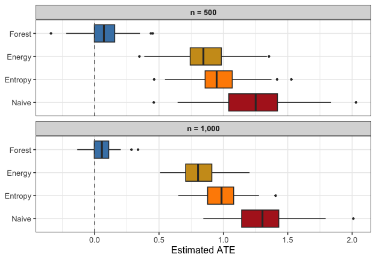

Getting Started with forestBalance
guide.RmdOverview
forestBalance estimates average treatment effects (ATE)
in observational studies by combining multivariate random forests with
kernel energy balancing. The key idea is:
- Fit a random forest that jointly predicts treatment and outcome from covariates, so that the tree structure captures confounding.
- Use the forest’s leaf co-membership to define a similarity kernel.
- Obtain balancing weights via a closed-form kernel energy distance solution.
Because the kernel reflects the nonlinear relationships between covariates, treatment, and outcome, the resulting weights can balance complex confounding structure that linear methods may miss.
The method is described in:
De, S. and Huling, J.D. (2025). Data adaptive covariate balancing for causal effect estimation for high dimensional data. arXiv:2512.18069.
Simulating data
simulate_data() generates observational data with
nonlinear confounding. The propensity score depends on
through a Beta density, and the outcome depends nonlinearly on
,
,
and
:
set.seed(123)
dat <- simulate_data(n = 800, p = 10, ate = 0)
# True ATE
dat$ate
#> [1] 0
# Naive (unadjusted) estimate
round(mean(dat$Y[dat$A == 1]) - mean(dat$Y[dat$A == 0]), 4)
#> [1] 0.9812The naive difference-in-means is badly biased because of confounding.
Estimating the ATE
Forest balance
fit_fb <- forest_balance(dat$X, dat$A, dat$Y, num.trees = 1000)
fit_fb
#> Forest Kernel Energy Balancing
#> --------------------------------------------------
#> n = 800 (n_treated = 275, n_control = 525)
#> Trees: 1000
#> Solver: direct
#> ATE estimate: 0.0388
#> ESS: treated = 191/275 (70%) control = 394/525 (75%)
#> --------------------------------------------------
#> Use summary() for covariate balance details.Entropy balancing (WeightIt)
Entropy balancing finds weights that exactly balance covariate means between treated and control groups:
df <- data.frame(A = dat$A, dat$X)
fit_ebal <- weightit(A ~ ., data = df, method = "ebal")
ate_ebal <- weighted.mean(dat$Y[dat$A == 1], fit_ebal$weights[dat$A == 1]) -
weighted.mean(dat$Y[dat$A == 0], fit_ebal$weights[dat$A == 0])Energy balancing (WeightIt)
Energy balancing minimizes the energy distance between the weighted treated and control covariate distributions:
fit_energy <- weightit(A ~ ., data = df, method = "energy")
ate_energy <- weighted.mean(dat$Y[dat$A == 1], fit_energy$weights[dat$A == 1]) -
weighted.mean(dat$Y[dat$A == 0], fit_energy$weights[dat$A == 0])Covariate balance
summary() shows the full balance comparison. Let’s also
check balance on nonlinear transformations of the covariates, since the
confounding operates through the Beta density:
X <- dat$X
X.nl <- cbind(
X[, 1]^2, X[, 2]^2, X[, 5]^2,
X[, 1] * X[, 2], X[, 1] * X[, 5],
dbeta(X[, 1], 2, 4), dbeta(X[, 5], 2, 4)
)
colnames(X.nl) <- c("X1^2", "X2^2", "X5^2", "X1*X2", "X1*X5",
"Beta(X1)", "Beta(X5)")
summary(fit_fb, X.trans = X.nl)
#> Forest Kernel Energy Balancing
#> ============================================================
#> n = 800 (n_treated = 275, n_control = 525)
#> Trees: 1000
#> Kernel density: 29.0% nonzero
#>
#> ATE estimate: 0.0388
#> ============================================================
#>
#> Covariate Balance (|SMD|)
#> ------------------------------------------------------------
#> Covariate Unweighted Weighted
#> ---------- ------------ ------------
#> X1 0.1668 * 0.0220
#> X2 0.2956 * 0.0086
#> X3 0.0277 0.0148
#> X4 0.1102 * 0.0242
#> X5 0.0430 0.0210
#> X6 0.0189 0.0055
#> X7 0.0945 0.0258
#> X8 0.0733 0.0033
#> X9 0.0332 0.0284
#> X10 0.0734 0.0055
#> ---------- ------------ ------------
#> Max |SMD| 0.2956 0.0284
#> (* indicates |SMD| > 0.10)
#>
#> Transformed Covariate Balance (|SMD|)
#> ------------------------------------------------------------
#> Transform Unweighted Weighted
#> ---------- ------------ ------------
#> X1^2 0.2904 * 0.0259
#> X2^2 0.0941 0.0322
#> X5^2 0.0841 0.0694
#> X1*X2 0.1303 * 0.0144
#> X1*X5 0.0573 0.0582
#> Beta(X1) 0.6847 * 0.0347
#> Beta(X5) 0.0289 0.0138
#> ---------- ------------ ------------
#> Max |SMD| 0.6847 0.0694
#>
#> Effective Sample Size
#> ------------------------------------------------------------
#> Treated: 191 / 275 (70%)
#> Control: 394 / 525 (75%)
#>
#> Energy Distance
#> ------------------------------------------------------------
#> Unweighted: 0.0486
#> Weighted: 0.0144
#> ============================================================We can use compute_balance() to compare all methods on
the same terms:
bal_fb <- compute_balance(dat$X, dat$A, fit_fb$weights, X.trans = X.nl)
bal_ebal <- compute_balance(dat$X, dat$A, fit_ebal$weights, X.trans = X.nl)
bal_energy <- compute_balance(dat$X, dat$A, fit_energy$weights, X.trans = X.nl)
bal_unwtd <- compute_balance(dat$X, dat$A, rep(1, dat$n), X.trans = X.nl)| Method | Max SMD (linear) | Max SMD (nonlinear) | ESS treated | ESS control |
|---|---|---|---|---|
| Unweighted | 0.2956 | 0.6847 | 100% | 100% |
| Entropy balancing | 0.0000 | 0.6213 | 93% | 98% |
| Energy balancing | 0.0074 | 0.4879 | 84% | 87% |
| Forest balance | 0.0284 | 0.0694 | 70% | 75% |
All three weighting methods reduce the linear covariate imbalance. Both energy balancing the forest balance approach also reduce imbalance on nonlinear functions of the covariates, as they both aim to balance the joint distributions of covariates, however, forest balancing over-emphasizes full distributional balance of confounders specifically rather than all possible covariates.
Simulation study
A simulation study with 100 replications at two sample sizes ( and ) demonstrates how the methods compare and how performance changes with :
run_sim <- function(n, nreps = 50, num.trees = 500, seed = 1) {
set.seed(seed)
methods <- c("Naive", "Entropy", "Energy", "Forest")
results <- matrix(NA, nreps, length(methods), dimnames = list(NULL, methods))
for (r in seq_len(nreps)) {
dat <- simulate_data(n = n, p = 10, ate = 0)
df <- data.frame(A = dat$A, dat$X)
fit_fb <- forest_balance(dat$X, dat$A, dat$Y, num.trees = num.trees)
w_ebal <- tryCatch(weightit(A ~ ., data = df, method = "ebal")$weights,
error = function(e) rep(1, dat$n))
w_energy <- tryCatch(weightit(A ~ ., data = df, method = "energy")$weights,
error = function(e) rep(1, dat$n))
results[r, "Naive"] <- mean(dat$Y[dat$A == 1]) - mean(dat$Y[dat$A == 0])
results[r, "Entropy"] <- weighted.mean(dat$Y[dat$A == 1], w_ebal[dat$A == 1]) -
weighted.mean(dat$Y[dat$A == 0], w_ebal[dat$A == 0])
results[r, "Energy"] <- weighted.mean(dat$Y[dat$A == 1], w_energy[dat$A == 1]) -
weighted.mean(dat$Y[dat$A == 0], w_energy[dat$A == 0])
results[r, "Forest"] <- fit_fb$ate
}
results
}
res_500 <- run_sim(n = 500, seed = 1)
res_1000 <- run_sim(n = 1000, seed = 1)| n | Method | Bias | SD | RMSE |
|---|---|---|---|---|
| 500 | Naive | 1.1672 | 0.2460 | 1.1928 |
| 500 | Entropy | 0.9590 | 0.1898 | 0.9776 |
| 500 | Energy | 0.8407 | 0.2029 | 0.8649 |
| 500 | Forest | 0.0983 | 0.1493 | 0.1787 |
| 1000 | Naive | 1.2292 | 0.1975 | 1.2449 |
| 1000 | Entropy | 0.9674 | 0.1314 | 0.9762 |
| 1000 | Energy | 0.7815 | 0.1254 | 0.7915 |
| 1000 | Forest | 0.0882 | 0.0897 | 0.1258 |

All weighting methods improve over the naive estimator. At , entropy balancing (which only targets linear covariate means) retains substantial bias, while energy balancing and forest balance both reduce bias more effectively. At , all methods improve, but forest balance continues to show the lowest bias and competitive RMSE, reflecting the advantage of its confounding-targeted kernel.
Step-by-step interface
For more control, the pipeline can be run in stages:
library(grf)
dat <- simulate_data(n = 500, p = 10)
# 1. Fit the joint forest
forest <- multi_regression_forest(dat$X, scale(cbind(dat$A, dat$Y)),
num.trees = 500)
# 2. Extract leaf node matrix (n x B)
leaf_mat <- get_leaf_node_matrix(forest, dat$X)
dim(leaf_mat)
#> [1] 500 500
# 3. Build sparse proximity kernel
K <- leaf_node_kernel(leaf_mat)
round(100 * length(K@x) / prod(dim(K)), 1) # % nonzero
#> [1] 31.2
# 4. Compute balancing weights
bal <- kernel_balance(dat$A, K)
# 5. Estimate ATE
weighted.mean(dat$Y[dat$A == 1], bal$weights[dat$A == 1]) -
weighted.mean(dat$Y[dat$A == 0], bal$weights[dat$A == 0])
#> [1] 0.3063087